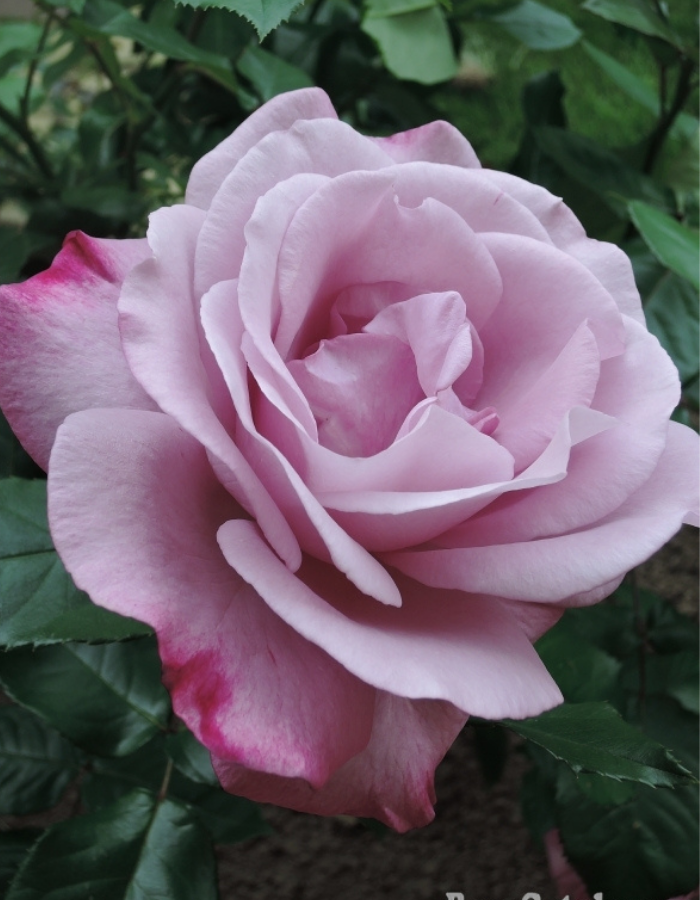
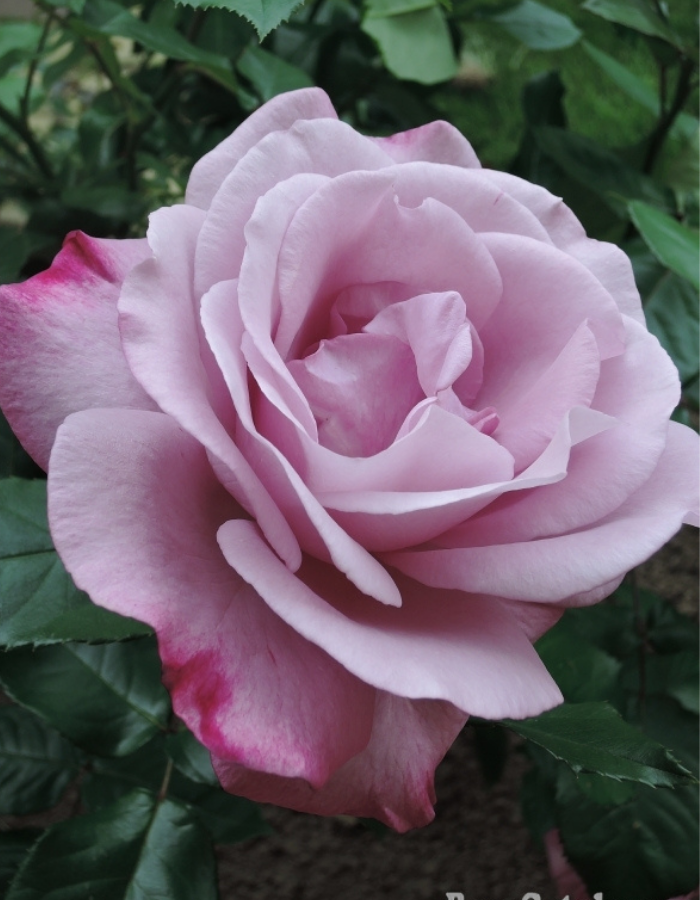
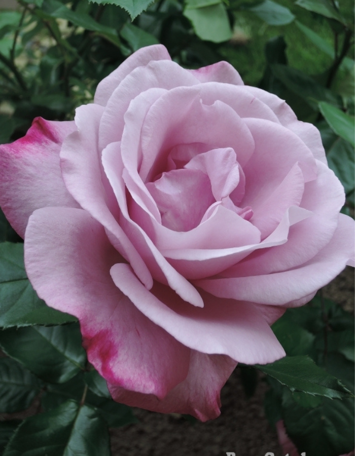

Виды дизайна: протестировано ресурсом CosmoFarmer.com в компании “Apartment Laboratory”.

Рисунок 1: Роза Растение имеет форму куста высотой от 30 до 200 см.
Цветы простые, полумахровые или махровые всех цветов и оттенков, кроме чёрного и синего.
Рисунок 2: Незабудка Растение высотой до 40 см с разветвлённым стеблем.
На стебле расположены мягкие ланцетовидные листья и соцветия мелких цветков бледно-голубого, небесно-голубого, белого или розового цвета.
Рисунок 3: Ирис Растение с прямым стеблем высотой 50–70 см, узкие листья, одиночные
(или в соцветиях) цветы белого, жёлтого, бледно-голубого, пурпурного цвета.
Рисунок 4: Калла – это водно-болотное или прибрежное травянистое растение из семейства ароидных с соцветиями потрясающей нежности и красоты.
Родиной величественной и элегантной каллы Является жаркая и богатая своей флорой Южная Африка.
Цветки каллы имеют уникальную форму, а ее современные...
Рисунок 5: Лилия – это род цветковых растений, насчитывающий более 130 видов, распространённых на территории Европы, Азии и Северной Америки.
Красивые цветы лилии имеют воронкообразную или колокольчатую форму и любые оттенки от белоснежного до почти черного, а ее мясистые листья могут быть белыми, розовыми...
Рисунок 6: Лизиантус – это изысканно цветущий представитель дикорастущих лугов Центральной Америки.
На родине его называют техасским колокольчиком, тюльпановой горечавкой , а иногда и японской или ирландской розой.
Последние две ассоциации возникли неспроста, поскольку цветы лизиантуса...
 
